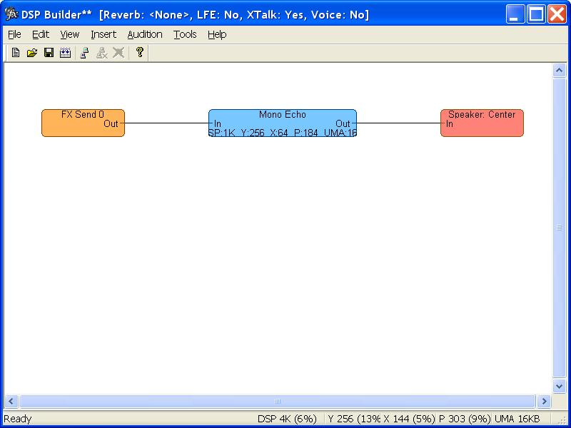
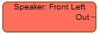
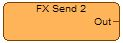
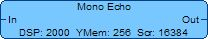
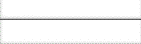
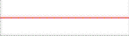

The DSP Builder tool (DSPBuilder) enables users to quickly assemble a DSP effects image using a graphical user interface. It creates the DSP effects image, the .ini file (which could be used with XGPImage later), and the .h file, without the user having to manually create and/or edit the .ini file used by XGPImage.
While XGPImage provides equal or greater flexibility than DSPBuilder, DSPBbuilder is much easier to use and should allow you to start developing your own images more quickly.
The following list contains the features provided by DSPBuilder:
GraphI3DL2_I3DL2Reverb and GraphXTalk_XTalk respectively, and are used with the DSEFFECTIMAGELOC structure.The following list contains differences between XGPImage and DSPBuilder:
The following image is the screen shot of the DSP Builder tool:

The main window starts out blank. By right clicking on the mouse and selecting one of the insert commands, you can add mixbins and effects to your DSP effects image.


Effects are represented in DSPBuilder with a blue rectangle. The following image is the representation of an echo effect:

Patch cords are used to connect mixbins and effects. They are represented by lines in DSPBuilder. Patch cords can be in two different states: connected and incorrect.


Rather than having to generate and save the DSP image, giving it to the audio developer, and waiting for a rebuild of the game with the new image, there is an alternative for rapid auditioning of the content: DSP Server. DSP Server source code is provided with the XDK and can be integrated into a title with minimal coding. It is also used by the Audio Console Application (audconsole.xbe), an Xbox audio audition tool provided on XDK recovery discs and available for separate download from Xbox Central.
DSP Server allows the application to accept updated effects images in real time as transmitted from DSP Builder. So, while playing the title, the current effects program can be swapped out, effect parameters altered, and so on.
Developers only need to do the following:
An Xbox application that uses DSP Server can take advantage of DSP Builder's transmit option, accessible from both the Xbox menu as Transmit Image and the Transmit Image icon on the toolbar. When applied, the current effects program is downloaded to the Xbox from the PC.
The DSP Builder generated header file contains a unique set of names for the effect constants (as long as the effects' names are not changed to be identical). Effects that you add will appear in the header in the following formats:
In the examples above, <UserEffectName> will be replaced by the name you enter for the effect. <EffectName> is the actual name of the effect (for example, IIR2), or if there are duplicate effects (with the same default names), the name will be appended with a unique integer, or the user-specified name.
Note Supported characters for user names include [A–Z, a–z, 0–9, _]. All other characters are deleted.
DSP Builder added effects (that is, those selected for the Build Options menu under Tools), will be named the following:
// Effect Indices (the names will never change): GraphI3DL2_I3DL2Reverb // The default reverb in the image - even if added by and/or renamed by the user GraphXTalk_XTalk // The default XTalk in the image GraphXTalkToLFE_XTalkToLFE_A // XTalk to LFE send A GraphXTalkToLFE_XTalkToLFE_B // XTalk to LFE send B GraphXTalkToLFE_XTalkToLFE_C // XTalk to LFE send C GraphVoice_Voice_0 // Voice on mixbin 16 GraphVoice_Voice_1 // Voice on mixbin 17 GraphVoice_Voice_2 // Voice on mixbin 18 GraphVoice_Voice_3 // Voice on mixbin 19 // State Structures (the names will never change): GraphI3DL2_FX0_I3DL2Reverb_STATE GraphXTalk_FX0_XTalk_STATE GraphXTalkToLFE_FX0_XTalkToLFE_A_STATE GraphXTalkToLFE_FX1_XTalkToLFE_B_STATE GraphXTalkToLFE_FX2_XTalkToLFE_C_STATE GraphVoice_FX0_Voice_0_STATE GraphVoice_FX1_Voice_1_STATE GraphVoice_FX2_Voice_2_STATE GraphVoice_FX3_Voice_3_STATE
The following topics are related to the DSP builder tool: